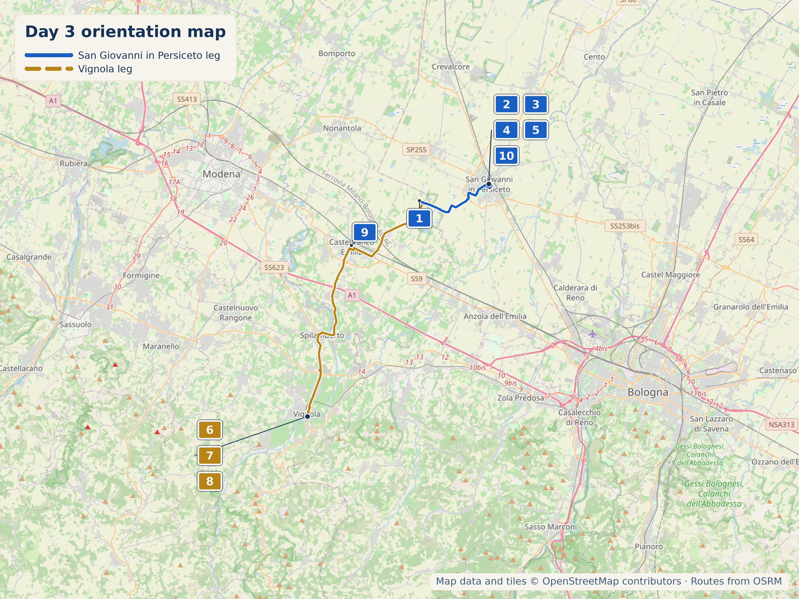

Overview
12 September 2026 is a Saturday. An earlier draft of this page left today deliberately blank — a family day near Bologna, "no research required." It's kept as a light day on purpose, but not an empty one: San Giovanni in Persiceto and Vignola are both real, low-key, half-day options from a Castelfranco Emilia base, entirely optional and easy to skip without missing anything essential.
San Giovanni in Persiceto
%2001.JPG)
- Why stop: The heart of the "Borgo Rotondo," a medieval concentric-ring town plan of Lombard origin — a genuinely distinctive layout, not a generic piazza. The Palazzo Comunale (15th century) and Basilica Collegiata di San Giovanni Battista anchor the square; the Collegiata holds paintings by Guercino, Albani, and the Gandolfi family.
- Time required: a comfortable half-day covers the centre plus one sight.
- Why stop: A bronze statue, right in the main square, of a real orange cat. Gino (b. June 2009) wandered freely through the historic centre, was a regular presence in the municipal offices — sitting in on meetings, earning the joke title of "Assessore al Benessere Ambientale" before locals settled on "Supreme Sovereign of San Giovanni in Persiceto" — and was beloved enough that when he was killed by a vehicle in November 2018, the town commissioned sculptor Claudio Nicoli to cast him in bronze. Listed on Atlas Obscura; genuinely the kind of thing worth deliberately seeking out rather than walking past.
- Time required: 5 min, right alongside the Borgo Rotondo stop above
- Why stop: In 1980, Gino Pellegrini — a Persiceto-born Hollywood set designer who worked on 2001: A Space Odyssey, West Side Story, and Hitchcock's The Birds — began repainting the facades of this small, run-down square in trompe-l'oeil, across four campaigns (1980, 1982, 1990, 1998, 2004): fake windows, hanging laundry, oversized vegetables, farm animals. Real, unusual, free, and easy to walk right past if you don't know to look.
- Time required: 10–15 min
- Access: Park near Porta Garibaldi, about 3 min walk in — no tickets or fixed hours, it's outdoor street art on private house facades.
Known for bomboloni. Full current hours weren't independently confirmed beyond the opening time — worth a quick check before relying on it.
Continues the original Bagnoli-family recipe for africanetti di Persiceto — an almond-shaped biscuit dating to 1858, granted De.Co. (municipal designation) status in 2023. A genuine documented local product, not folklore. Alternative: Al Forno delle Sorelle Bongiovanni, Via Giordano Bruno 5.
Vignola (fully optional add-on)

- Why stop: A genuinely important, well-preserved medieval fortress built by the Contrari family, with a real internal courtyard and a frescoed chapel — not a facade-only "castle view." €10/€6, includes brochure and audioguide; last entry one hour before closing.
- Timing note: 12 September 2026 is a Saturday, so the Rocca is open — its schedule runs Friday–Sunday only, worth knowing if the day slips to another day of the week.
- Time required: 1–1.5 hours for the self-guided core rooms.
Birthplace and continuous producer of Torta Barozzi — a dense flourless chocolate-almond-coffee cake invented here by Eugenio Gollini, secret recipe, still family-run by his grand-nieces. Genuinely famous beyond Vignola.

Cherries are Vignola's headline product but they're a May–June crop, out of season in September. Instead: Vignola sits inside the Aceto Balsamico Tradizionale di Modena DOP zone, and this fourth-generation family producer runs 1.5–2 hour tours with tasting, in Italian or English. Only workable if booked ahead of the trip — not a walk-in stop.
If You Want to Do Absolutely Nothing
Rastellino, tonight's base, is a small, quiet frazione — genuinely nothing to "do" there beyond the modest 1884 Chiesa di Santa Maria della Neve, built near the ruins of the medieval Rastellino castle, and open countryside. It's honestly a sit-in-the-garden kind of place, worth saying plainly rather than inventing an activity.
Castelfranco Emilia itself is worth a short mention if there's any energy left: Piazza Garibaldi holds a "Monumento al Tortellino," commemorating the town's well-documented local legend that tortellini were shaped after an innkeeper glimpsed a noblewoman's navel through a keyhole. The town runs an annual Sagra del Tortellino Tradizionale — it ran 4–15 September in 2025; whether the 2026 dates overlap with today wasn't confirmed, worth a look closer to the date. The Chiesa di Santa Maria Assunta holds an Assumption of the Virgin by Guido Reni.

Hidden Gem
The Statua di Re Gino and Piazzetta Betlemme sit a five-minute walk apart in the same small town — a beloved cat who unofficially ran the mayor's office, and a Hollywood set designer's trompe-l'oeil square, both the kind of thing most people driving through the Bolognese countryside have never heard of.
Today's Route & Timing
Optional stop maps: Piazzetta Betlemme Google Acetaia La Cà dal Nôn (reservation required) Google
Print timing summary: today has no mandatory driving — base is 0 minutes. San Giovanni in Persiceto (Borgo Rotondo, Piazzetta Betlemme, round-trip drive plus a half-day on the ground) adds 2h26–3h26. Vignola (Rocca plus round-trip drive) adds 2h18–2h48. Both fit comfortably in one day if wanted — total driving for the full loop is under 1h30 — but San Giovanni in Persiceto alone is the lower-effort pick if the day should stay genuinely light.
Day 3 route map

Numbered points of interest
- R&B Villa Tartaruga, Rastellino Start / baseVia Garzolé 41-43, Rastellino, 41013 Castelfranco Emilia MO, Italy
GPS: 44.6269459, 11.1195137 - Piazza del Popolo & Collegiata Stop40017 San Giovanni in Persiceto BO, Italy
GPS: 44.6384848, 11.1874716 - Piazzetta Betlemme Hidden gem / quirkyVia Betlemme, 40017 San Giovanni in Persiceto BO, Italy
GPS: 44.6391987, 11.1901568 - Pasticceria Dora CoffeeVia Crevalcore 1, 40017 San Giovanni in Persiceto BO, Italy
GPS: 44.6430230, 11.1857293 - Caffè Pasticceria Mimì Local specialityVia Guardia Nazionale 1, 40017 San Giovanni in Persiceto BO, Italy
GPS: 44.6401562, 11.1869812 - Rocca di Vignola Optional stopPiazza dei Contrari 4, 41058 Vignola MO, Italy
GPS: 44.4764050, 11.0101210 - Pasticceria Gollini Optional / pastryPiazza Garibaldi, 41058 Vignola MO, Italy
GPS: 44.4766000, 11.0104000 - Acetaia La Cà dal Nôn Optional / reservation requiredVia Ghiaurov 50-56, 41058 Vignola MO, Italy
GPS: 44.4932594, 11.0134113 - Monumento al Tortellino, Castelfranco Emilia Cool / quirkyPiazza Garibaldi, 41013 Castelfranco Emilia MO, Italy
GPS: 44.5956559, 11.0531420 - Statua di Re Gino Cool / quirkyPiazza del Popolo, 40017 San Giovanni in Persiceto BO, Italy
GPS: 44.6384848, 11.1874716
OpenStreetMap-derived orientation map only, not turn-by-turn navigation. Use Organic Maps for POI browsing and the Google Maps buttons above for live route navigation.
If Time Is Tight
Do nothing — that's the actual design of this day. If there's a pull to see something, Piazzetta Betlemme alone is a 15-minute round detour from Rastellino.
If You've Got Half a Day
San Giovanni in Persiceto: the Borgo Rotondo, Piazzetta Betlemme, and a stop for africanetti at Caffè Pasticceria Mimì.
Skip It
🏆 Today's Winners
Road Trip Score
| Category | Rating |
|---|---|
| Food | ★★★☆☆ |
| Coffee | ★★★☆☆ |
| Atmosphere | ★★★☆☆ |
| Photography | ★★★☆☆ |
| History | ★★☆☆☆ |
| Young Traveller Appeal | ★★★☆☆ |
| Worth Detour | ★★★☆☆ |
%202025-04-20%2005.jpg)